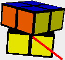
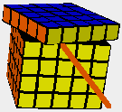
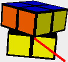
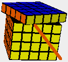

Article 1: OfficialsA competition must have independent judges, score takers and scramblers for each event of the competition. Every event must have a main judge who is responsible for following the rules and making decisions in case of doubt. Judges must follow the procedures and if the procedure is not followed correctly by the competitor, or in special cases (like puzzle defects, incomplete solves, equipment failure), the main judge decides about the outcome, based on the rules provided below.The main judge for an event must be independent and may not compete in the event. Scramblers and judges can compete in the event, but they have to compete before all other competitors, with the scrambling and judging done by someone not competing in the event. The main judge may decide to start a round later than scheduled, but only earlier than scheduled with a clear announcement to all competitors. The main judge may award a competitor another turn or qualifying turn due to interference or distraction created by a person or persons or facility distractions such as power failure, emergency alarms, etc. The WCA delegate(s) attending official competitions can be official, competitor or both, following the normal regulations. Article 2: CompetitorsAny person can be a competitor during a competition, if he:
Registrants must provide all required information for their registration to be considered complete. All information can be used for the competition only, and can only be given to other organisations/persons after permission from the competitor. Competitors must be able to show a passport/id-card during registration at the location to prove their identity. Competitors must obey venue rules and are expected to conduct themselves in a manner considerate of others at all times during the competition and while at the competition venue. Competitors must remain quiet when inside the designated competition area. Talking is permitted, but must be kept at a reasonable level, and away from those competing. Competitors must be fully dressed. Competitors may dress in jeans, pants, shorts, slacks, skirts, foot-wear, T-shirts or dress shirts. Hats may be worn. Clothes can not display vulgar language or have inappropriate pictures. While competing competitors may not use sound or other electronic equipment (like walkmans, dictaphones or additional lighting). Disqualification of a competitor may be enforced by the main judge for the following reasons:
Competitors are not eligible for any refund of any expenses they incurred to be part of the competition as a result of disqualification. Competitors may dispute a ruling in verbal form to the main judge. Disputes are only possible during the competition, within 30 minutes after the disputed incident happened, and before the next round of the event has started. The dispute must be handled by the main judge before the next round of the event has started. Disputes are only allowed within the parameters of a main judge's discretion. No disputes are allowed regarding the WCA regulations. Failure by the competitor to accept the final ruling will be grounds for disqualification of the competitor. Article 3: PuzzlesCompetitors must bring and use their own puzzles. Competitors may borrow puzzles from other competitors, as long as both competitors are ready to compete when they are called for to do so.Puzzles must be in reasonable working order, so that normal scrambling is possible. Competitors can use any normal 6 colour scheme for cubes, as long as the cubes show 1 colour per face in solved position. For other puzzles competitors can use any generally available variation that has the same moves, positions and solutions as the original puzzle. The colours of the puzzle must be solid, the same per colour, and clearly distinct from other colours. The puzzle must either have coloured stickers or coloured tiles. Tiles may not be thicker than standard Rubik's Game Cube or Rubik's DeLuxe cube tiles, or the generally available thickness for non cube puzzles. Puzzles may be made smoother internally by sanding or using any lubricant. No modifications are allowed that enhance the basic concept of the puzzle. Some examples of enhancing the basic concept are: new moves are possible, normal moves are impossible, more colours/pieces are visible, moves are done automatically, more or other solved positions. Puzzles must be clean and may not have any textures, markings, damages, or other differences that distinguish one piece from a similar piece. Any modifications to a puzzle that result in poor performance or results by a competitor are not grounds for additional chances to compete in any given round and turn. Puzzles must be approved by a judge before the competitor can compete. Article 4: ScramblingThe puzzles are to be scrambled using a computer-generated random scrambling algorithm. A scrambler must apply the scrambles.Cubes are generally scrambled with the white (or the lightest colour) face on top and green (or blue or the darkest face) on the front. If a competitor wants other colours, then he must name the colours during registration. Competitors have to solve the same scrambles per round. At the main judge's discretion, scrambling algorithms in a given solve of preliminary rounds may be randomly chosen from a pool of scrambles, for example to prevent cheating in larger competitions. The number of moves varies for each puzzle:
Article 5: Puzzle DefectsPuzzle defects are unintentional defects of puzzles (like: pieces popping, wires breaking, screws/caps/stickers falling off) that make it impossible or much harder to solve the puzzle.In 'Best of' rounds solves with a puzzle defect cannot be exchanged by an extra attempt. If a puzzle defect occurs, the competitor may choose to repair the puzzle and continue the solve. In 'Average of 5' or 'Mean of 3' rounds solves with a puzzle defect may be exchanged by an extra attempt, depending on the announcement for the competition. There may be maximum 1 extra attempt per round. In case of puzzle defects, the following rules must be followed:
Article 6: Awards/prizes/honorsAwards, prizes or honors may be given to competitors according to the announcement of the competition.Competitors must attend the winner's ceremony to be eligible for awards/prizes/honors. Winners of awards, prizes or honors preferably are prepared to talk to journalists or any media covering the competition. Article 7: EnvironmentCompetitions can be held on any location, inside or outside, on special stages or normal floors. Audience must be at least 1.50 meter away from the competitors.Lighting of the competition area needs special attention, with preferably white light, so that competitors can easily distinguish the colours of puzzles. The temperature of the competition area should preferably be 21 to 25 degrees Celsius. The competition area must be smoke-free, and must preferably have a reasonable noise level. The timer is placed directly (no objects underneath it) on a table, desk or console that suits solving while standing. For Solving With Feet the timer is placed directly on the floor. Competitors must preferably solve while standing (except for blindfolded solving and solving with feet), but solving while sitting is allowed although the height of the timer may be uncomfortable. Article 8: CompetitionsGuidelines for a competition to become official according to the WCA:
Competitions may have qualification times per event, to make sure that the time schedule can be followed. If during the event a competitor does not solve within the time limit, then his solve may (courtesy of main judge) be stopped and disqualified by the judge, and the competitor (courtesy of main judge) does not get any more attempts for the event. Article 9: EventsEvent must have one of the following formats:
'Best of' can be used for all puzzles. 'Average of 5' can be used for Rubik's 2x2x2 Cube, Rubik's 3x3x3 Cube, Rubik's Magic, Pyraminx, Rubik's Master Magic. 'Mean of 3' can be used for all other puzzles. Rounds of averages/means are preferred (except for blindfolded solving), depending on the time available in the time schedule for the competition. For these formats there will be WCA world rankings available. Results of official WCA competitions will be listed on the WCA world rankings, for all events with 2 or more competitors, if WCA regulations were applied. Article A: Speed SolvingEvents categorised under Speed Solving must abide to the following procedure:ScramblingThe competitor hands over the puzzle to the judge and waits in the designated area until he can compete.A scrambler scrambles the puzzle according to the rules in Article 4. The competitor may not see the puzzle while it is being scrambled or before the preinspection period. All scrambled puzzles must be checked for correct scrambling by the judge. The judge places the puzzle onto the StackMat and covers it with hand or object. PreinspectionEach competitor will be allotted 15 seconds (timed to the nearest second) to inspect the scrambled puzzle. Events without preinspection are possible, but will be ranked in a separate world ranking category.During this preinspection time, the competitor is allowed to pick up the puzzle, but he may not manipulate the puzzle in anyway. If the competitor manipulates the puzzle, the solve is disqualified. The competitor may end preinspection any time before the 15 seconds have passed. 5 seconds before the allotted 15 seconds are over, the judge timing the preinspection time says "5 seconds". As soon as the 15 second preinspection period has expired, the competitor has 2 seconds (timed mentally by the judge) to place the puzzle down. If he does not comply, the judge adds a 2 second penalty to the competitor's final solve time. If the competitor still does not place the cube down 5 seconds (timed mentally by the judge) after the 15-second preinspection period has expired, the judge may disqualify the solve. Starting the SolveAfter the preinspection period, the competitor shall place the puzzle back onto the StackMat in the orientation and position he wishes to begin the solve. The judge covers the puzzle with hand or object, in order to obstruct the competitor's view of the puzzle. The judge may not move the puzzle nor make any rotations or manipulations of the puzzle.On a StackMat Generation 1 timer, the competitor must place his hands flat on the StackMat timer, with his fingers touching the sensors and palms down. On a StackMat Generation 2 timer, the competitor must place his hands flat on the elevated area of the StackMat, with his fingers touching the sensors and palms down. The competitor may not have any physical contact with the puzzle before he begins the solve. The judge confirms that the timer has been reset and is ready for use. When the judge and the competitor mutually agree in a reasonable period that the competitor is ready to begin the solve, the judge says "Ready?". When the competitor confirms, the judge uncovers the puzzle after 1 second. The competitor has 3 seconds to begin his solve after the puzzle is uncovered. If the competitor does not begin his solve after 3 seconds (timed mentally by the judge), the judge may add 2 seconds to the competitor's solve time. If the competitor does not begin the solve 7 seconds after the judge uncovered the cube, the judge, after consulting with the main judge of the event, may disqualify the solve. During the SolveWhile solving the puzzle, the competitor may not have any communication with anyone other than the judge.While solving the puzzle, the competitor may not have any assistance from anyone or any object. Ending the SolveThe competitor ends the solve by placing the puzzle back onto the StackMat and then stopping the timer. The timer must be stopped with both hands flat, palms down and the fingers touching the timer sensors, and without touching the puzzle. It is the competitor's responsibility that the timer is stopped correctly.After the competitor stops the timer, he may not touch the puzzle or reset the timer until the judge has inspected the puzzle. A judge may disqualify a solve for touching the puzzle or resetting the timer before he has inspected the puzzle. If a competitor manipulates the puzzle after the timer has been stopped, before the judge has inspected the puzzle, the solve is automatically disqualified. The judge inspects the puzzle and determines whether or not it has been completely solved. The competitor may pick up his puzzle only after the judge has inspected the puzzle. Solved StateFor each puzzle the solved state must be clear to all competitors before the competition.All pieces of the puzzle must be attached to the puzzle for it to be solved. If a piece of the puzzle is ejected as the puzzle is placed down but it is otherwise solved, then the puzzle is not considered to be in a solved state. If a non functional part of a puzzle is defect/ejected and the puzzle is still unambiguously in a solved state, then the puzzle is considered solved, under discretion of the judge. CubesCubes are solved when all sides are restored to solid colour states. A face of the cube may be misaligned in the following manner. The inner corner of the cube (all sizes) on the misaligned face may not cross the inner edge of the connecting slice.Examples:
Only the resting state of the cube is considered. The cube must come to a complete stop in its solved state in order for the cube to be solved. Rubik's MagicFor Rubik's Magic the puzzle must be flat on the surface when starting and ending the solve.The maximum elevation of any part of the Magic at the end of a solve is two tiles higher than flat. The Magic may lie upside down at start and end. Other puzzlesOther puzzles are solved according to the solved position as defined in the generally accepted goal of the puzzle, with the regulations of the cube solved state applied when applicable.AdministrationThe judge writes down the result of the solve on a competition sheet. The competitor is responsible for checking the result on the sheet, immediately after the judge has written it down.At the end of a competitor's round the judge delivers the competition sheet to the score taker. Article B: Blindfolded SolvingSee Article A. Additional/special regulations for Blindfolded Solving:Starting the SolveAll times under 10 minutes must be done on a StackMat timer.If it is uncertain that the competitor will stay under 10 minutes, then the judge will use a stopwatch in addition to the StackMat timer. In that case the StackMat time counts for times under 10 minutes, and the stopwatch time for times over 10 minutes. If it is clear that the competitor will exceed 10 minutes, then the judge will use a stopwatch instead of a StackMat timer. In case the competitor solves under 10 minutes, then 10 minutes will be his time. When using a stopwatch only, the judge places the puzzle on the surface and covers the puzzle with hand or object, in order to obstruct the competitor's view of the puzzle. The judge may not move the puzzle nor make any rotations or manipulations of the puzzle. The competitor places his hands flat on the surface with the palms down. The competitor may not touch the puzzle. The judge confirms that the timer has been reset and is ready for use. When the judge and the competitor mutually agree in a reasonable period that the competitor is ready to begin the solve, the judge says "Ready?". When the competitor confirms, the judge uncovers the puzzle after 1 second. At the same time the judge starts the stopwatch. MemorisationThe competitor memorises the puzzle status. The competitor may pick up the puzzle, but he may not do any moves or manipulations on the puzzle. The competitor may not make notes.During the SolveAfter memorisation the competitor dons the blindfold (provided by judge). The competitor may manipulate the puzzle only after the judge has verified that the competitor has properly donned the blindfold. The judge shall not delay the competitor by more than 1 second.The competitor may not look at the puzzle state at any time during the solve. Ending the SolveWhen using a stopwatch only, the competitor ends the solve by placing the puzzle back onto the surface. The judge stops the timer after the competitor no longer has any physical contact with the puzzle and verifies verbally that the solve is completed. The judge also gives a verbal confirmation that the timer has been stopped.The competitor may remove his blindfold after the solve. Article C: One-handed SolvingSee Article A. Additional/special regulations for One-handed Solving:During the preinspection and solve the competitor may only use one hand. No other body part or the table or any other available object may touch the puzzle. Once a competitor touches the puzzle with one hand, he may not touch the puzzle with the other hand. Article D: Solving With FeetSee Article A. Additional/special regulations for Solving With Feet:All times under 10 minutes must be done on a StackMat timer. If it is uncertain that the competitor will stay under 10 minutes, then the judge will use a stopwatch in addition to the StackMat timer. In that case the StackMat time counts for times under 10 minutes, and the stopwatch time for times over 10 minutes. If it is clear that the competitor will exceed 10 minutes, then the judge will use a stopwatch instead of a StackMat timer. In case the competitor solves under 10 minutes, then 10 minutes will be his time. See also Article B. The judge places the puzzle on a surface. During the preinspection and solve the competitor may only use his bare feet and the surface. No other body parts or other available objects may touch the puzzle. The competitor may solve while sitting or standing. Article E: Fewest Moves SolvingSee Article A. Additional/special regulations for Fewest Moves Solving:The judge hands a scramble algorithm to all competitors. The judge starts the stopwatch and says "Go". The competitor has 60 minutes total time for solving the scramble in as few moves as possible. At the end of the 60 minutes the competitor must have his solution written down clearly for the judge, UDFBRL notation. The metrics to measure the length of the solution, is half turn metrics, with slice moves counting as 2 moves. The solution of the competitor may not be in any way related to the scrambling algorithm. The competitor must be able to give a clear explanation of the solution. The competitor can use the following props: paper and pen (both supplied by judge), 3 cubes (self supplied). If the competitor uses other props, then he will be disqualified. Article F: Rubik's Clock SolvingSee Article A. Additional/special regulations for Rubik's Clock Solving:ScramblingAfter the scrambling the judge places the puzzle onto the StackMat in a standing position.PreinspectionAfter the preinspection the competitor places the puzzle onto the StackMat in a standing position. |


 
